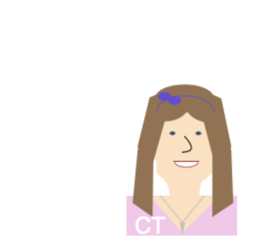
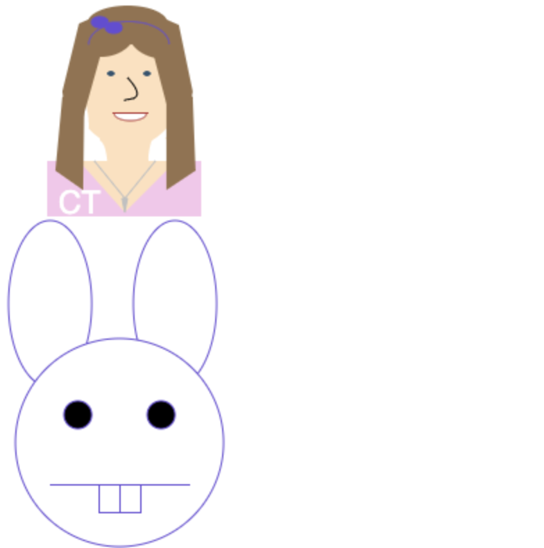

Tworek Bitmoji |
Dancing Bitmoji |
Bitmoji Race |
|---|---|---|
| This is a bitmoji created using drawing functions based on a headshot of me. | The original bitmoji has been animated allowing it to "dance" every time the restart button is clicked. | My original bitmoji, as well as a bunny, are placed on the screen and animated to race across in the x-direction at randomized speeds. |
|  |  |